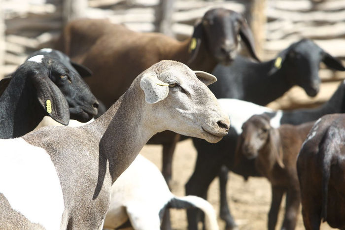

O que é a Caprinocultura?
Caprinocultura é a área da zootecnia que trabalha com a produção e criação de caprinos, são animais de pequeno porte chegando em média de 40 quilos, podem ser criados tanto para a produção de leite quanto de carne, são animais muito bem adaptados ao clima brasileiro, porém não são utilizados aprimoramento de genética nestes animais, é bem comum a utilização de espécies sem raça definida, sendo bons para leite quanto para engorda para carne, são bem comuns na região norte e nordeste do país, os produtos destes animais são bem apreciados, mas não são amplamente consumidos por conta da alta presença da carne bovina
O que o zootécnico faz nesta área?
- Maneja animais
- Conduz pesquisa
- Formular rações para diferentes animais
- Detectar problemas comportamentais nos animais
- Busca melhorar a saúde do animal
- Realiza ordenha ou prepara equipamentos de ordenha
- Proporciona rações para engordar os animais
- Trazer bem estar aos animais

Produção do animal
Tanto caprinos e ovinos são muito semelhantes, podem ser produzidos em sistema intensivo ou extensivo, consomem primariamente capim igual outros animais, mas podem consumir rações especializadas com maior valor nutritivo para o animal, por seu menor porte é muito comum ter uma grande quantidade de animais em uma propriedade os fazendo ser bem rentável.
Produtos do animal
Assim como na bovinocultura estes animais podem produzir tanto carne quanto leite, mas por conta do seu tamanho pequeno, eles não produzem leite em grande quantidade, e também não produzem muitos quilos de carne por animal, enquanto isso os Ovinos não produzem leite o suficiente para poder ser comercializado, mas produzem lã que pode ser vendida para indústrias, que vão servir de matéria para roupas e tecidos, é muito comum que estes animais sejam produzidos em pequenas propriedades para consumo próprio.
Leite
O leite de cabra é o fator principal para a sua produção, produz cerca de 20 a 30 litros de leite diariamente, varia da raça e a genética do animal, é retirado quando é feito a reprodução do animal é retirado o leite diariamente, pode ser retirado manualmente, ou preferencialmente por ordenhadeiras mecânicas que são mais rápidas e conseguem retirar o leite de maneira mais eficiente.
Características do leite
O leite de cabra é um leite diferente do leite de vaca, possui mais gordura, mas também possui um grande valor nutritivo, possui nutrientes e vitaminas diferentes fazendo que o gosto seja diferente, é bem comum que o consumo do leite de cabra seja feito quando a pessoa não consegue consumir o leite de vaca por conta do sistema de lactose diferente. Por conta da menor quantidade de rebanho não possui suporte suficiente, e por conta disso o preço é maior em comparação com o leite de vaca, mas é muito indicado por nutricionistas pelo seu alto teor de nutrientes e vitaminas.

Carne
A carne de cabra é o outro produto gerado a partir deste animal é um animal que possui uma facilidade de engordar, assim gerando uma carne de boa qualidade, dependendo do seu manejo.
Características da carne
A carne de cabra possui uma cor vermelha mais escura em comparação com a carne de vaca, possui um teor de gordura um menor, é uma carne muito saudável, muito indicada por nutricionistas para o consumo, indicado para pessoas mais idosas e até crianças, mas possui um gosto bem característico, então não é todas as pessoas que conseguem consumir, por conta do menor suporte não é tão fácil o seu comércio, assim possuindo um preço mais elevado.